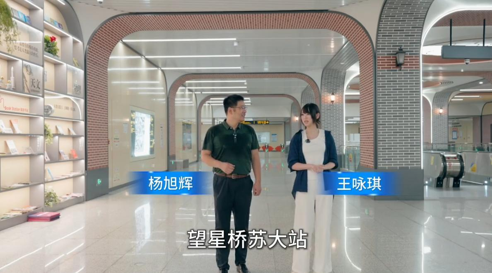
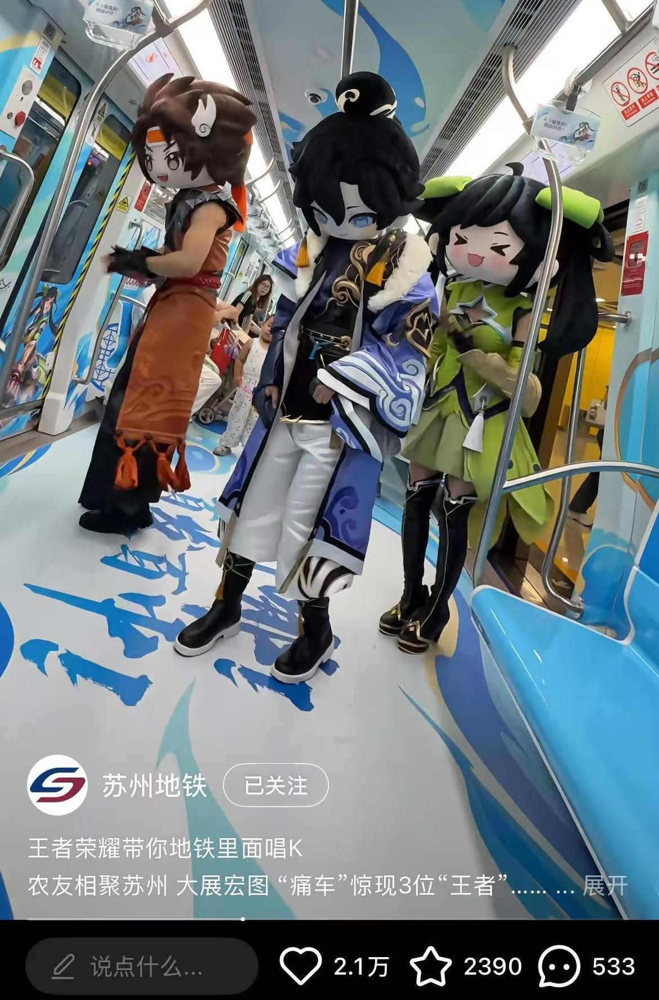
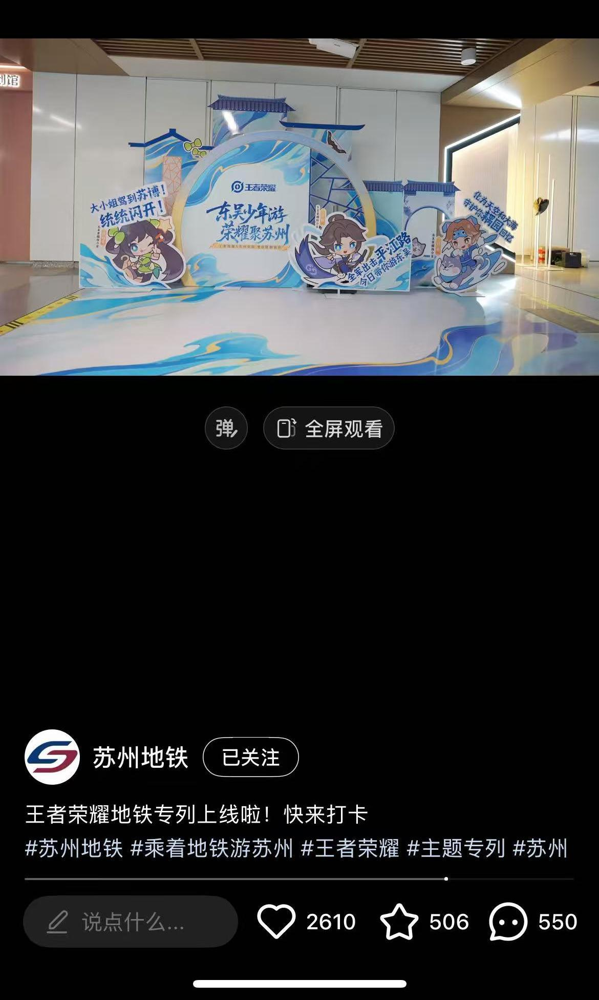
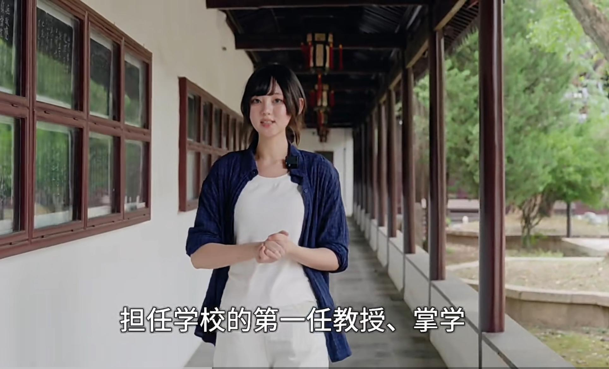

一句话结果
2 条自然流单条全平台点赞 3w+ 爆款，总计 1w+ 粉丝转化； 联动王者荣耀、百家讲坛、苏超，总计曝光 150w+。
背景与目标
城市官方账号的内容通常偏“通报式”，年轻用户不会主动看。 目标是在不破坏官方调性的前提下，用更年轻的内容语态扩大触达， 让地铁账号从“出行信息发布”变成“城市内容入口”。
我的判断
官方账号的年轻化，不是把网络梗硬塞进通报里，而是找到“官方内容”与“年轻人关心的话题”的交集： 城市文化、通勤生活、体育赛事、游戏 IP、本地文旅。 用年轻人熟悉的叙事方式，讲官方本来就要讲的事。
我做了什么
1. 官号短视频全流程
负责选题、脚本、拍摄、采访、剪辑与全渠道发布，打造 2 条自然流单条 3w+ 点赞爆款。
2. 跨界联动
联动百家讲坛客座教授推出《乘着地铁去读诗》， 联动王者荣耀 IP 暑期活动、苏超赛事与苏州文旅部门，拓展年轻受众。
3. 人物采访与城市内容
采访奥运冠军盛李豪等 5 位人物，采编播一体化，兼顾官方表达与内容可看性。
现场与内容样例




结果
- 2 条自然流单条全平台点赞 3w+，总计 1w+ 粉丝转化。
- 王者荣耀 / 百家讲坛 / 苏超联动，总计曝光 150w+。
- 单条视频全网自然流互动 5w+。
复盘
官方账号的年轻化，关键是“翻译”而不是“讨好”： 把官方要传达的信息，翻译成年轻人愿意看的故事。 这套方法可以复用到城市文旅、游戏 IP 联动和品牌官方号运营。